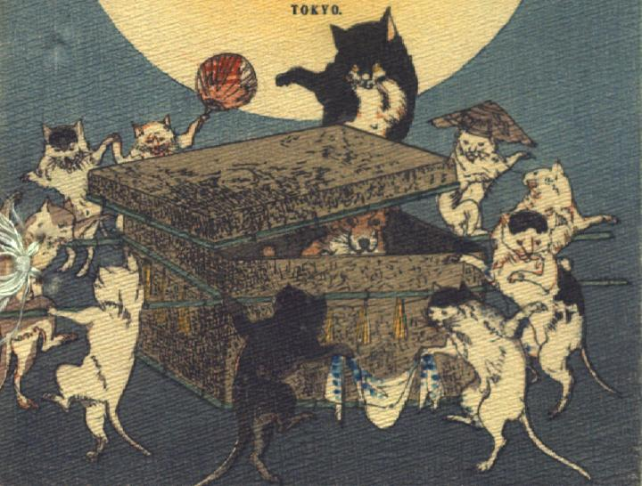

化け猫たち。10体の化け猫たちが、長持を囲んで踊っている。中央奥の黒毛で腹が白い猫は、他の猫の2倍ほどの大きさである。他の猫たちは、編み笠をかぶったり、団扇をもったり、対になって手拭いを掴んだりして踊っている。長持の蓋がずれて、中にしっぺい太郎が座っているのが見える。長持の側面に注連縄のようなものがはりめぐらされている。
著作者：J.Dautremer／出典：親書誌：U426_nichibunken_0102：Sippeïtaro／日付：2006／資源識別子：U426_nichibunken_0102_0001_0000
Copyright (c)2010- International Research Center for Japanese Studies, Kyoto, Japan. All rights reserved.